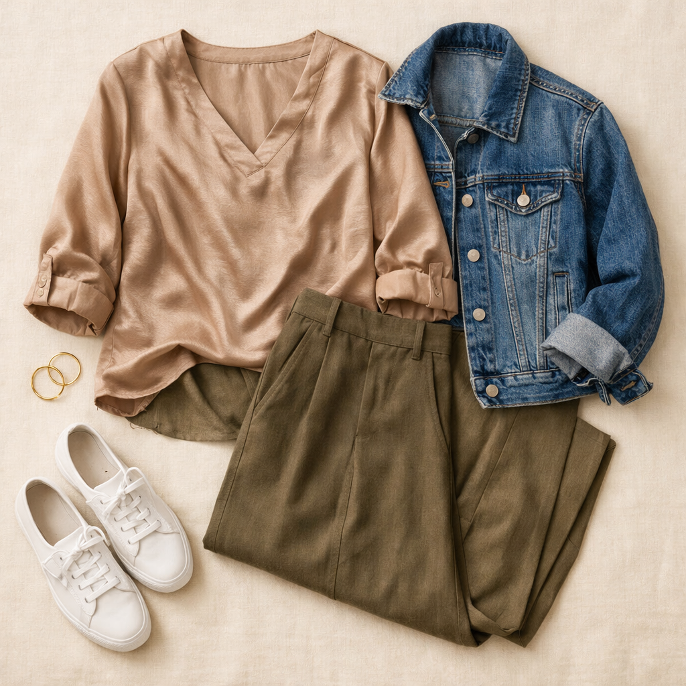

Vince Camuto (via Nordstrom)
Rumple Satin Top
$59
Flowy relaxed V-neck top in softly rumpled satin. 3/4 sleeves with button cuffs. 100% polyester. Machine washable. 25.5" length — perfect for tucking or wearing untucked. Fits sizes 4–6 in S; consider XS for a more fitted look. The rumpled satin texture is the key detail — it catches light subtly and reads luxury.
Shop This ItemWhy This Pick
Rich Taupe is the warm neutral your navy/black wardrobe is begging for — it looks expensive and sophisticated without being a risk. The rumple satin texture adds visual interest and luxury that says "Executive Director." It's machine washable (!!) which is huge for a busy schedule. Pairs with virtually every bottom you own and every new pant in this capsule. This is the workhorse top that makes everything else look better — you'll reach for it constantly. At $59 from Nordstrom, this is one of the best value-to-impact ratios in the entire capsule.
Style It With Your Wardrobe
Flat-lay outfit ideas pairing this piece with items you already own

Relaxed Friday Chic
Rich Taupe satin top + Dark Khaki BR wide-leg (Pick #1) + Jean jacket (#211) + White Keds (#510). Warm neutrals head to toe with a denim layer for casual Friday energy. The taupe and khaki are a soft tonal pairing that feels intentional and relaxed — executive off-duty, not sloppy. This is your "look put together with zero effort" outfit.